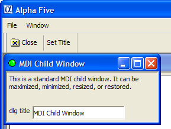

MDI Xdialog Framework
IMPORTANT: If you are using Version 8 or above, you can take advantage of an
improved technique for creating MDI Xdialogs. Refer to the sample 'Learning
Xdialog' database that ships with Alpha Five and refer to the
'mdi_xdialog_frameworkV8' script. The main difference between the new
technique, and the technique described here is that in the new technique, a
'context' is established and the menu and toolbar are instantiated in that
'context'. This is done in the Xdialog's OnInit event. It is no longer
necessary to instantiate the menus and toolbars in the on
This Xdialog box script displays a MDI (Multiple Document Interface) child window. It assumes that you have created a toolbar called MDI_test, and a menu called MDI_test. The toolbar should have at least two buttons called set_title and close.
The event for the set_title button should be Internal Action and the event name should be set_title.
The event for the close button should be close.
The menu has two commands, File > Set window title, and File > Close.
The xdialog menu string for this menu is:
File|{DATA=command:set_title}Set window title File|{DATA=command:close}Close window |
Note that the menu action for each of these menu items is the same as for their corresponding action in the toolbar. This script shows that it is possible to launch multiple instances of the MDI child window. Each instance operates independently of the other. The key to the way in which the toolbar and menu events get executed is the function command()defined at the end of this script.
Examples
This function sends the events to the Xdialog box.
dim event_string as C dim menu_string as C dim toolbar_string as P dim message as C dim pDummy as P title_var_name = "title_var"+stritran(time(),":","_") eval(title_var_name) = "Dialog Title" dlg_title = "@=" + title_var_name |
This is how we register a new MDI window class so that it appears in the Window menu and the Window menubar. This function takes three arguments: the class name, the class description, and the class icon.
a5_mdi_windowclass_add("mymdiclass","My Special MDI Window Type","A5_ball_green") 'This is the event handler string for the Top Menu event_string = <<%code% if left(a_command,3) = "A5." then a5.command(substr(a_command,4) ) a_command = "" else if left(a_command,1) = "!" then evaluate_template(substr(a_command,2) ) a_command = "" else if left(a_command,6) = "addin:" then evaluate_template(substr(a_command,7) ) else if left(a_command,8) = "command:" then ui_dlg_event(dlg_title,substr(a_command,9) ) else if .not. ("|" $ a_command) then this.command(a_command) a_command = "" end if %code% menu_string = a5_menu_def_load("MDI_test") toolbar_string = a5_toolbar_def_load("mdi_test") message = "This is a standard MDI child window. It can be maximized, minimized, resized, or restored." ui_modeless_dlg_box(dlg_title,<<%dlg% {icon=A5_ball_green} {mdichild=mymdiclass} {on_activate=activate} {on_deactivate=deactivate} {text=50,4:Message}; dlg title .30title!title_change; %dlg%,<<%code% if a_dlg_button = "set_title" then title = ui_get_text("Title","Enter the text for the Window Title") if title <> "" then eval(title_var_name) = title end if end if if a_dlg_button = "activate" then 'show the toolbar pDummy.dummy = "" toolbar_name = a5_system_toolbar_show(pDummy,toolbar_string) |
Show the menu. The UI_EXPAND_BRANCHES() function is used to expand certain menu 'macros' (such as recent file list, or window list) at runtime.
ui_top_menu(ui_expand_branches(menu_string), event_string) end if |
Before closing the toolbar we check to see if it still exists -- the user could have undocked the toolbar and closed it before closing the dialog box.
if a_dlg_button = "deactivate" then if ui_modeless_dlg_exist(toolbar_name) then ui_modeless_dlg_close(toolbar_name) end if end if if a_dlg_button = "title_change" then eval(title_var_name) = title end if if a_dlg_button = "close" then ui_modeless_dlg_close(dlg_title) end if %code%) |
This is the event handler for the toolbar.
function command as v ( vars as P,command as C ) with vars if left(command,6) = "event:" then command = substr(command,7) end if ui_dlg_event(dlg_title,command) command = "" end with end function |

Next
See Also
{MDICHILD}, {ON_ACTIVATE}, {ON_DEACTIVATE}, Miscellaneous Examples
Supported By
Alpha Five Version 6 and Above
Limitations
Desktop applications only.